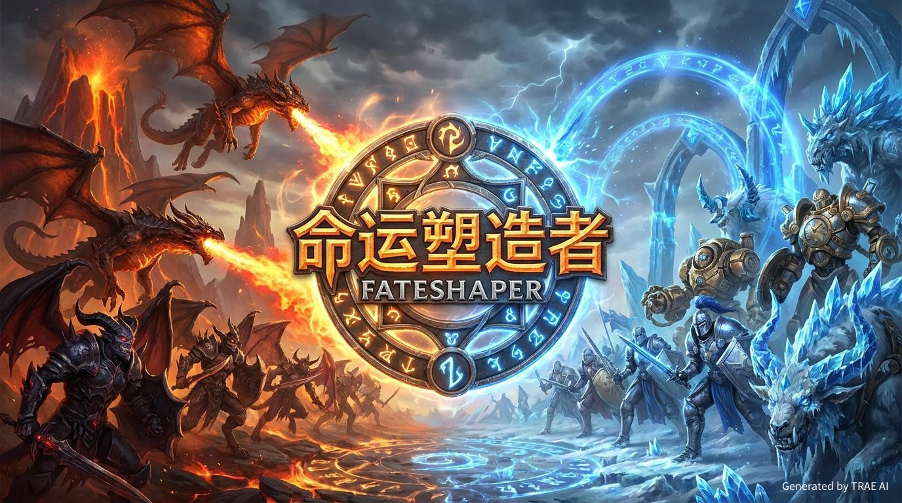
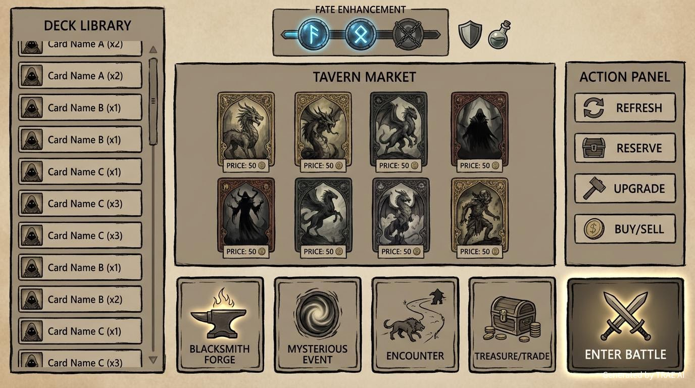
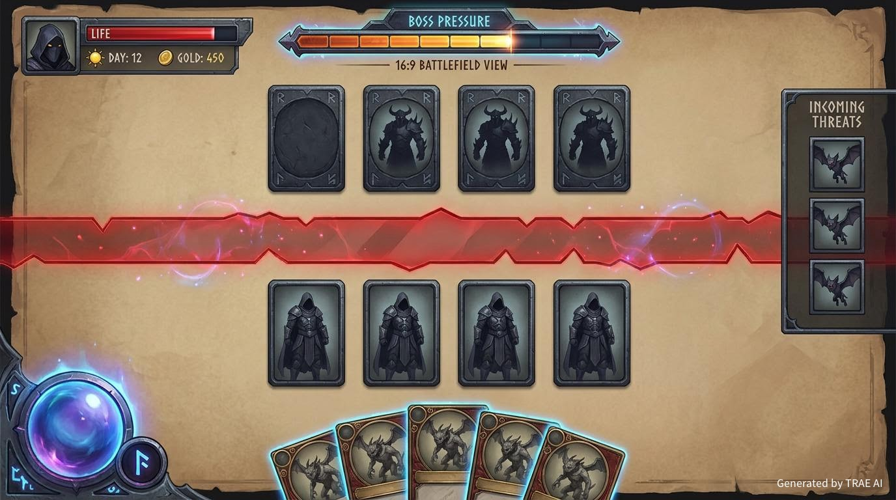

核心痛点
当别人高节奏成型时，玩家很容易在自己的组合还没成形前就被淘汰，很多“这一局我本来想玩什么”的乐趣来不及发生。
酒馆经营 + 卡牌构筑 + 怪物波次战斗
《命运塑造者》想把酒馆淘牌的经营快感、单人冒险中的构筑成长，以及战斗里即时验证思路的决策感放进同一个项目里。 它不是把玩家丢进多人对抗的淘汰压力里，而是让玩家围绕自己的目标慢慢经营，在商店选择、事件处理、卡组调整与战斗应对中塑造这一局的命运。
很多自走棋的爽点在于刷新、保留、升级、追三合一时的淘金感，但多人环境又会把这种成长节奏打断。 《命运塑造者》希望把这种经营乐趣保留下来，同时让玩家把每一次商店里的决定，带进下一场真正需要出牌、部署和取舍的战斗里。
当别人高节奏成型时，玩家很容易在自己的组合还没成形前就被淘汰，很多“这一局我本来想玩什么”的乐趣来不及发生。
《命运塑造者》把对抗压力改成单人局内挑战。玩家不再和别人抢天胡，而是在自己的冒险节奏里完成经营、成长、构筑，再用战斗验证方向对不对。
玩法被拆成两个清晰阶段：经营阶段负责做选择、积累与调整，战斗阶段负责承接这些选择并把压力具体抛给玩家。 事件和成长不独立成第三套系统，而是并在经营阶段内部出现，成为商店决策的一部分。
玩家在商店界面里围绕资源和牌库状态做决定，目标不是机械买牌，而是在有限金币和位置里判断这一回合该补强、该追三合一，还是该为后面留空间。
战斗不是“放着看结果”的自动演出，而是玩家要用已经构筑好的牌组和场上单位，去应对怪物波次、敌方阵列和 Boss 压力。
三张图分别对应作品的整体气质、经营阶段和战斗阶段，帮助观众快速理解《命运塑造者》想呈现的体验结构。

最终游戏呈现效果以DEMO为主这张图用于传达《命运塑造者》的世界观气质、题材方向与整体视觉基调。

最终游戏呈现效果以DEMO为主左侧是牌库列表，中间是商店牌位，右侧是操作区；上方展示命途强化状态，下方提供多种事件抉择，并在右下提供进入战斗入口。

最终游戏呈现效果以DEMO为主上方是敌方与波次压力，下方是我方站位与手牌资源；Boss 压力与怪物预览会持续给出威胁信息，推动玩家做出出牌与部署取舍。
《命运塑造者》想做的不是单纯把几个热门词拼起来，而是让经营、构筑、战斗彼此咬合，让玩家每回合都能感到“我正在把这局塑造成某种样子”。
每轮刷新、保留、升级和追三合一都带着期待，关键牌出现时会有很直接的惊喜。
把被别人提前淘汰的挫败感，换成围绕自己目标慢慢经营并持续修正路线的成长感。
随机带来惊喜，但事件、成长、保留和买卖决策给了玩家稳定塑形的空间，不是完全听天由命。
经营里的选择会很快进入战斗验证，路线正确与否不需要很长反馈链，适合快速试玩与持续迭代。